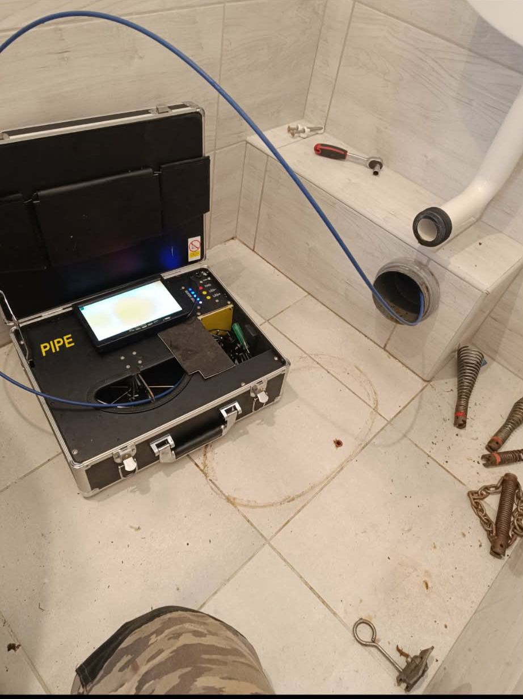

Ha nem tudni, honnan jön a baj, a találgatás helyett belenézek a csőbe. A kamerás vizsgálat megmutatja a dugulás valódi okát és a hiba pontos helyét, így felesleges bontás nélkül lehet dönteni.
Sok esetben a dugulás csak egy tünet, a valódi ok a csővezetékben rejlik. A kamerás vizsgálattal a vezeték belsejét élőben látom, így nem kell megbontani a falat vagy a burkolatot ahhoz, hogy kiderüljön, mi a probléma.
Megmutatom, mit lát a kamera, elmondom, mi okozza a problémát, és javaslatot adok a megoldásra. Így nem homályos becslés, hanem tényleges állapot alapján tud dönteni a további munkáról. A várható költségekről az árak oldalon tájékozódhat, vagy kérjen ajánlatot a kapcsolat oldalon.

A vízálló kamerát a vezetékbe vezetem, a képet pedig egy monitoron együtt nézzük meg. Így nem kell a falat vagy a burkolatot megbontani ahhoz, hogy kiderüljön, hol és mi a probléma.
A vizsgálat után pontosan tudni fogja, milyen állapotban van a csatornahálózata – legyen szó visszatérő dugulásról, csőtörésről vagy gyökérbenövésről.
Kérek egy időpontotHa megunta, hogy folyton visszatér a dugulás, derítsük ki a valódi okát. Hívjon, és megbeszéljük a csőkamerás vizsgálatot.